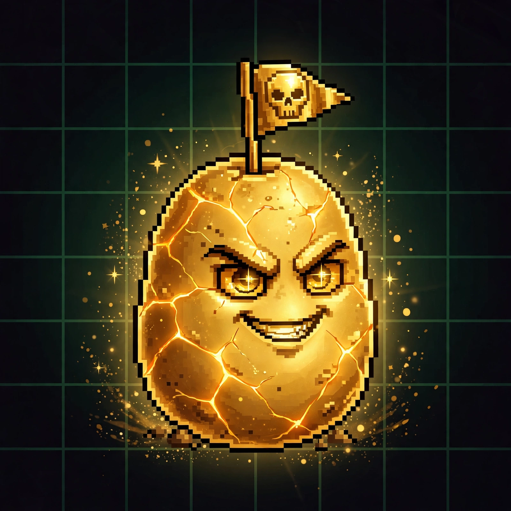

BitPotato v2. One potato. Every steal escrowed in full. When the pot doubles the seed and five wallets have held her, the clock starts, and 24 hours later she bakes and everybody who ever held her gets paid.
Steal Ida for $1 USDC. The full dollar sits in the contract. Nobody gets paid early, not the players, not the house. It all rides until the bake. And if a round ever stalls for 15 days, stealers can pull their dollar back out. Nobody's money dies in the pot.
When the pot reaches double the round's seed ($30 in round 1) with at least five different holders, a 24-hour countdown starts. Steals keep landing the whole time and the pot keeps growing. In the final 10 minutes the seat locks: late steals still feed the pot, but they can't steal the crown. No last-second snipes.
House takes 1% off the top. Of the rest, 70% pays the holders: the wallet holding Ida when the seat locked gets the big cut, rolled between 25% and 65% depending on volume, plus the Baked Potato trophy NFT. Every other wallet that ever held her splits the remainder equally. One wallet, one share, no matter how many times you stole her. Winnings wait in the contract for you to claim them, and anything unclaimed after 90 days feeds the baby.
10% of every bake feeds the baby pot. Your baby ticket locks in the moment the clock starts, one ticket per wallet that held Ida before the countdown. Every bake there's a 25% chance she's born, and one ticket takes the whole accumulated pot and the baby potato NFT. Unborn, she just keeps growing.
Seeded with $15, once. 20% of every bake reseeds the next round, and the skim stops once the reserve reaches $20, so big rounds pay their players instead of hoarding reserve. No keeper, no admin, no second seed. Ever.
Potato v2 is not deployed yet. This is a teaser. The steals, the clock, the bake, the baby, none of it exists onchain until it does.